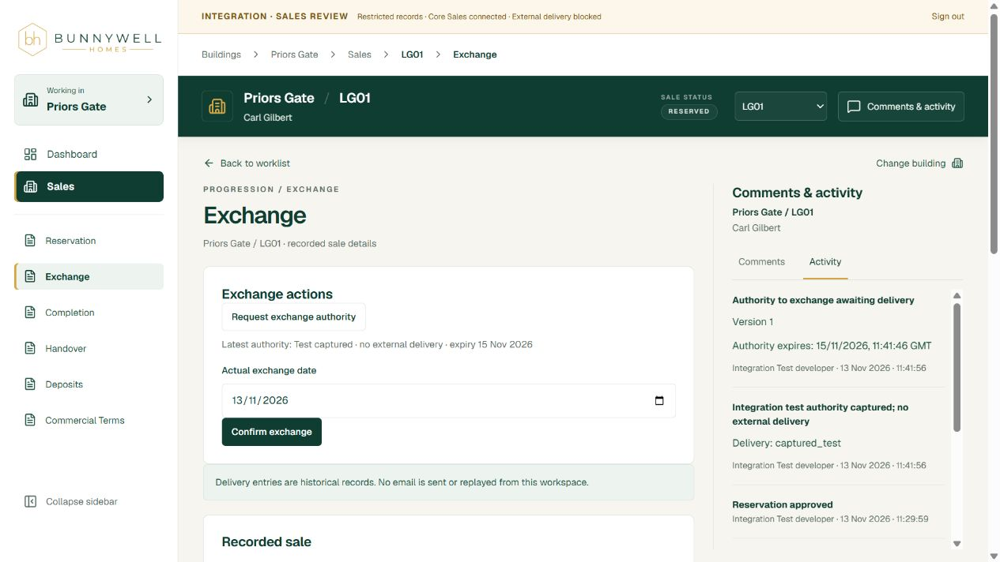

13 November 2026 · Integration only · Same review workspace
Completion 102 accepted by user testing. The user confirmed upload, query, revision and approval worked. The core Sales journey is connected. Full-system functional acceptance is still pending: remaining Sales operations, Snags writes and Setup writes require integration.
The saved reservation was approved, with no saved exchange authority or exchange. LG01 was outside the private test register; its custom buyer details also did not match the fixture naming/address convention. The user explicitly confirmed these details were fictional and requested designation. No entered buyer field was rewritten.
The backend now accepts explicit fictional-data confirmation in the private register as well as the existing fixture convention. Unregistered sales, mismatched unit/building/sale enrollment and direct client calls remain rejected. External delivery remains blocked.
One authority was captured through the hosted developer UI with genuine activity and captured_test status. Valid until 15 November 2026 at 11:41 GMT. Exchange was left unrecorded for the user. Both sent_at and provider message ID are null.
| Area | Working now | Still needed for a complete test |
|---|---|---|
| Core Sales | Reservation draft/PDF/submit/review; captured authority; conveyancer Exchange; notice and Completion arrangements; document review, Completion comments/activity and legal completion. | Fall-through and return to sale/new attempts; authority revocation/cancellation/expiry handling; notice replacement and date corrections; comment sending outside Completion. |
| Sales financials | Recorded terms, deposit schedules, fees and history. Private viewing of Reservation, notice and Completion PDFs. | Commercial/pricing/default edits; agent invoice upload/review; deposit/payment recording and corrections; fee recording/voiding; remaining private financial document viewers. These are record-keeping operations, not money movement. |
| Handover | Read route and empty-state handling. | Connected actions/finalisation and a designated populated test journey. Historical Trinity sale attempts have not been fabricated. |
| Snags | Register, filters/responsibility, recorded details, existing evidence, comments and activity. | Create/edit/assign, evidence upload, comment sending, resolve/inspect/reject/reopen/close, reports/captured notifications and contractor/developer-representative tests. |
| Setup / Buildings | People/access, organisations, trades, unit types and audit views; building structure, lifecycle, delivery team and defaults. | Administration writes; floors/units/areas, teams, defaults/pricing/allocation/lifecycle; fictional-user access changes and captured invitation/access-request flows. |
Existing legacy operations provide business rules, but several Snags and Setup handlers perform separate browser writes for a record, media and activity. They need atomic/retry-safe commands and scoped permissions before enabling the new workspace controls. This is implementation and testing work within the approved interface.
UI follow-ups identified here: show test eligibility and disabled Exchange reasons before authority review; clarify the historical “awaiting delivery” preparation event beside explicit test capture; label remaining read-only boundaries clearly. These UI changes are not included in this backend correction.
Vercel application remains fbde7b1c565868e03282fbf8adba1820a03c0385, deployment dpl_3MGNFioJrxp4w1gDZdjetRKW3ZCm; alias rechecked. No application rebuild was required. Applied integration migration: 20261113114104_workspace_confirmed_fictional_journey.
Destination unit f29914be-cb37-4251-b3a7-fba6c73c431b; sale e36611ff-7423-48c9-83db-d6ebba85b685. Changes: one private enrollment/confirmation, sale authority/workflow fields, authority 9076c0da-e21e-4581-8802-b5399b3306f2, private capture receipt and three workflow events. Buyer fields, unit record, terms, schedule, documents, previous events and comments were compared and preserved. Private recovery exports remain in tmp/hosted-lg01.
Existing project advisory counts were unchanged. This capture function remains server-only and the registry remains inaccessible to clients. Supabase advisory reference.
Legacy staging, real production, accepted import evidence and rental data remain untouched. No Snags, Setup or Handover writes were enabled by this correction. No external message was sent.
